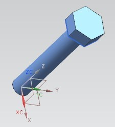
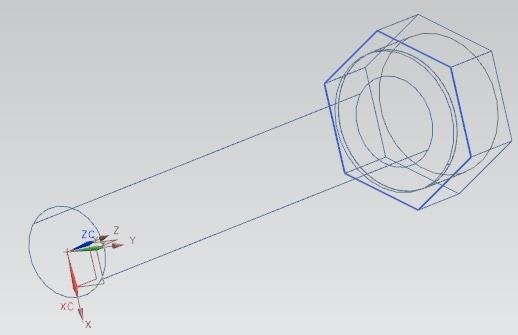

W15 <<
Previous Next >> Solvespace
NX12翻譯
現在我們將擠壓這個多邊形
- 選擇插入→設計特徵→拉伸
- 選擇要擠出的六角形
- 輸入結束距離為1876英寸
擠出後，模型看起來像右圖。
插入另一個具有以下尺寸的氣缸。
直徑= 0.387英寸
高度= 0.1875英寸
由於模型處於“靜態線框”中，因此您只能看到該圓柱體
在六角頭內。 該模型將如下所示。

現在，我們將使用特徵操作相交。
- 選擇插入→設計特徵→球體
- 選擇中心點和直徑
- 選擇最後繪製的圓柱體的底部（該圓柱體位於六角頭內，並且具有
直徑0.387英寸，高度0.1875英寸），如下所示
- 給出55作為直徑
- 在“Boolean”對話框中選擇“Intersect”
它將要求您選擇目標實體
如圖所示，這將為您提供六角螺栓。
注意：可以在螺栓帽子上創建此混合功能
也可以通過圍繞其軸的截面旋轉切割，
可以嘗試一下。
現在，我們將在六角螺栓上添加螺紋。
- 選擇插入→設計特徵→螺紋
- 單擊詳細單選按鈕
- 保持旋轉正確
- 點擊螺栓軸（長六角頭下方的圓柱）
選擇軸後，所有值將顯示在“線程”窗口中。 保留全部默認值。
六角螺栓現在應如圖所示
正確的。 保存模型。
4.7.2六角螺母
- 創建一個新文件並將其另存為Impeller_hexa-nut.prt
- 選擇插入→曲線→多邊形
- 輸入的邊數為6
- 創建一個六邊形，每邊尺寸為28685英寸，並在原點構造
- 選擇插入→設計特徵→拉伸
- 選擇要擠出的六角形並輸入末端距離為125英寸
顯示了模型圖
- 選擇插入→設計特徵→球形
- 輸入點中的中心點位置對話框窗口如下
XC = 0; YC = 0; ZC = 0.125
- 輸入直徑值57英寸
- 在布爾運算對話框中，選擇相交並單擊確定
該模型將如下所示。 我們現在使用Mirror命令創建另一個核心
- 選擇編輯→變換
- 選擇模型並單擊確定
- 單擊通過平面鏡像
- 單擊模型的平面，如圖所示。 注意不要選擇任何邊緣
您將獲得以下模型
- 選擇“插入”→“合併實體”→“合併”
- 選擇兩個部分並將它們合併
- 插入一個圓柱體，其向量指向ZC方向，並且以下內容
尺寸：
直徑= 0.25英寸
高度= 1英寸
現在，我們將倒角螺母的內部邊緣
- 選擇插入→詳細特徵→倒角
- 如圖所示，選擇兩個內部邊緣，然後單擊“確定”。
- 輸入“距離”為0436英寸，然後單擊“確定”。
您將在螺母上看到倒角。 保存模型。
4.7.3 L-Bar
在這裡，我們將利用一些原語和特徵操作，例如Edge Blend，Chamfer和Subtract。 應該注意的是，通過2D草圖繪製和拉伸可以更有效地創建相同的模型，但是此處使用圖元使用戶熟悉這些功能。
- 創建一個新文件並將其另存為Arborpress_L-bar
- 選擇插入→設計特徵→塊
- 創建具有以下尺寸的塊：
長度= 65英寸
寬度= 65英寸
高度= 285英寸
- 在原點創建塊
- 創建另一個塊，該塊也放置在具有以下尺寸的原點處：
長度= 182英寸
寬度= 65英寸
高度= 85英寸
我們必須將第二個塊移到第一個塊的頂部：
- 單擊編輯→移動對象
- 選擇第二個塊（綠色），然後單擊“確定”。
- 選擇運動作為距離
- 在“指定向量”對話框中選擇正ZC
- 輸入200作為距離值
- 確保已選中“移動原件”按鈕，然後單擊“確定”。
- 單擊“移動”，然後在下一個窗口中單擊“取消”，以便不重複該操作
現在我們將創建一個孔。 有幾種創建孔的方法。 我們將首先創建一個圓柱體，然後使用減法函數來實現。
- 選擇插入→設計特徵→氣缸
- 在“指定向量”上，選擇“ YC軸”圖標
- 在“指定點”中，輸入以下值：
XC = 130 YC = -5 ZC = 242
直徑= 35英寸
高度= 100英寸
- 在“布爾值”下拉窗口下，選擇“減”
- 選擇頂部的水平塊
該孔應看起來像圖中的孔。 現在，我們將創建另一個圓柱體並將其從上方的塊中減去.
圓柱體應指向在以下位置設置的正Y方向：XC = 130; YC = 22.5和ZC = 242，並且應具有以下尺寸：直徑= 66英寸； 高度= 20英寸
現在我們將創建一個塊。
長度= 25英寸寬度= 20英寸高度= 150英寸\
- 單擊“起源”框中的“點對話框”圖標，然後輸入以下值：
XC = 157; YC = 22.5； ZC = 180
該模型將看起來像右邊的圖。 現在，我們將從帶有孔的塊中減去該塊。
- 選擇“插入”→“合併實體”→“減去”
- 單擊以兩個孔（綠色）為目標的塊
- 選擇新創建的塊作為工具
- 點擊確定
該模型將如圖所示。 現在，我們將在功能操作中使用混合功能。 我們必須首先將兩個區塊結合起來。
- 選擇“插入”→“合併實體”→“合併”
- 單擊兩個塊，然後單擊確定
現在將這兩個塊合併為一個實體模型。
- 選擇插入→詳細特徵→邊緣融合
- 將半徑更改為60
- 在兩個塊的界面處選擇邊
- 點擊確定
重複相同的步驟以混合圖塊的內部邊緣。 這次，半徑應更改為30。
現在，我們將在模型中製作四個孔。 您可以使用“孔”選項創建這些孔。 但是，要練習使用特徵操作，我們將從塊中減去圓柱。
- 分別插入四個氣缸。 它們應指向正XC方向，並具有以下尺寸。
直徑= 8英寸
高度= 20英寸
氣缸＃1：X = 162; Y = 11.25； Z = 210
氣缸＃2：X = 162; Y = 11.25； Z = 275
3號缸：X = 162； Y = 53.75； Z = 210
氣缸4：X = 162; Y = 53.75； Z = 275
此模型的最後一個操作是創建一個塊並將其從頂部塊中減去。
長度= 60英寸寬度= 20英寸高度= 66英寸
XC = 130 YC = 22.5 ZC = 209.5
最終的數字將如下所示。 保存並關閉文件。
4.7.4 Rack
- 創建一個新的零件文件並將其另存為prt
- 右鍵單擊，然後選擇“定向視圖”→“等軸測”
- 選擇插入→曲線→矩形
點窗口將打開。 注意提示線說明。 提示線提供了下一步需要執行的步驟。 您需要定義矩形的拐角點。
對於角點1，
- 輸入坐標XC = 0，YC = 0，ZC = 0，然後單擊“確定”
將會彈出另一個Point Constructor窗口，您可以定義第二個Corner Point
- 輸入坐標XC = 240，YC = 25，ZC = 0，然後單擊“確定”，然後單擊“取消”
- 右鍵單擊屏幕，然後選擇FIT
注意：創建矩形有三個選項：
W15 <<
Previous Next >> Solvespace